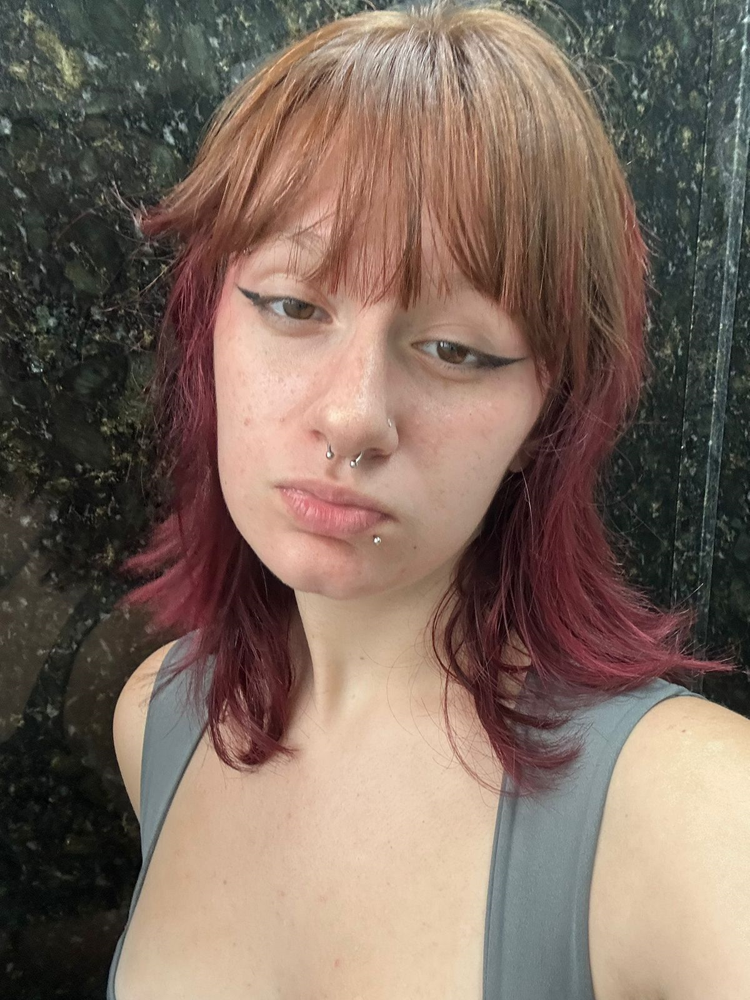
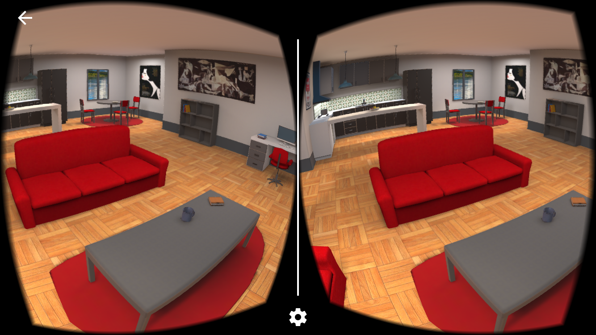
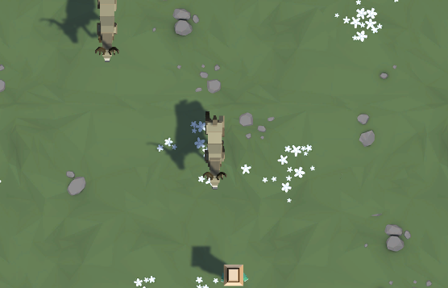
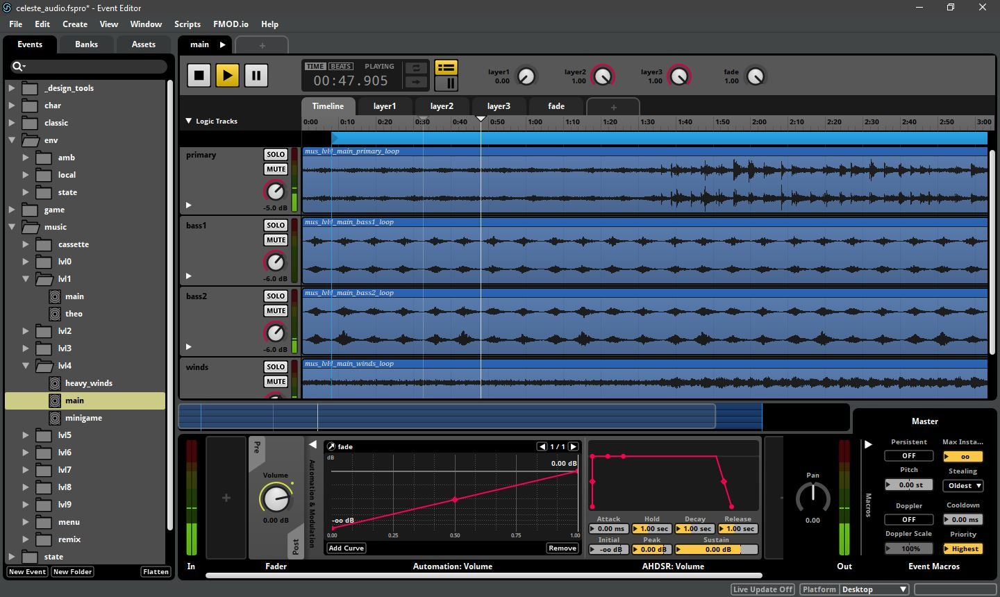
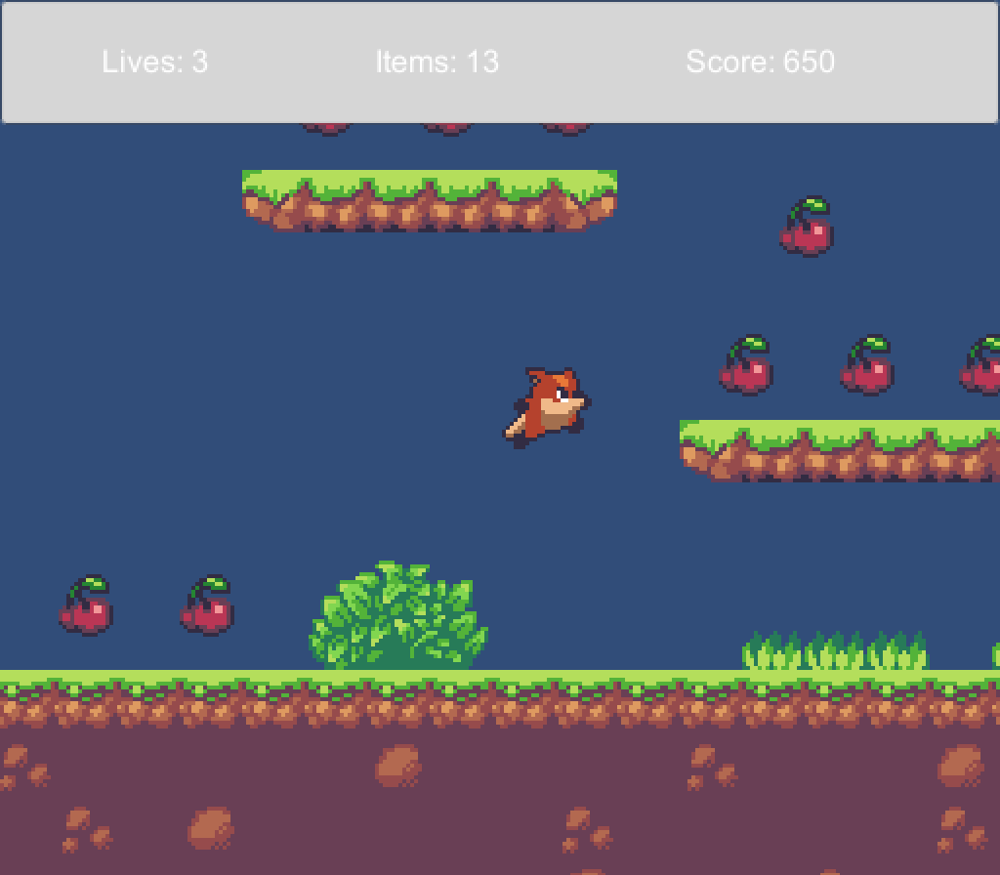
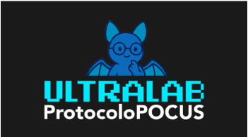
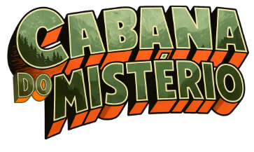
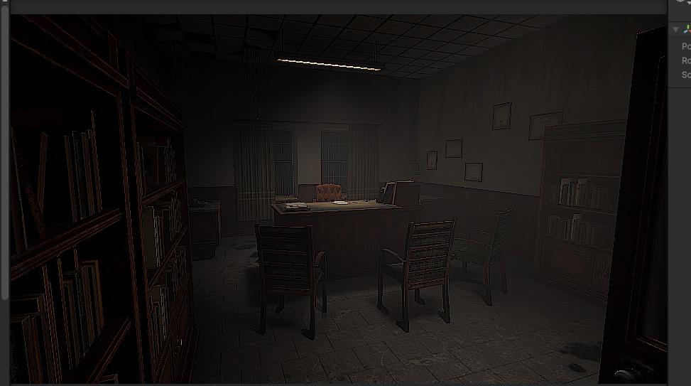
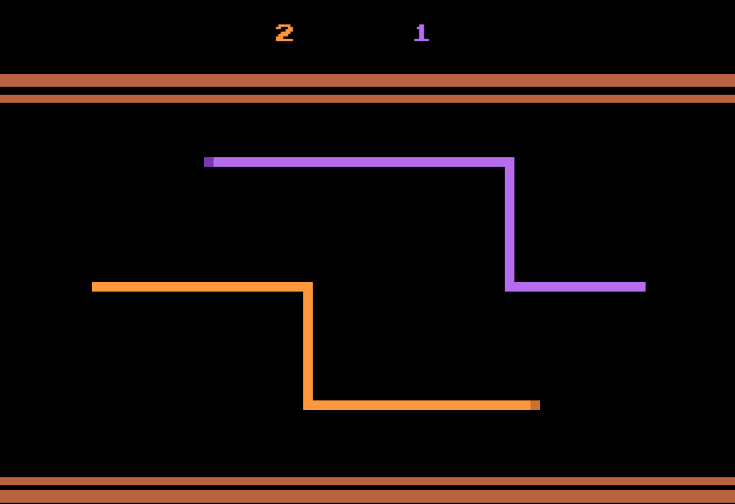

Nicoly Celestina Meira Cascaes
Atendimento ao Cliente | Organização | Apoio Administrativo
Sou uma profissional dedicada, responsável e comprometida com meu desenvolvimento profissional. Possuo experiência em atendimento ao cliente, comunicação e utilização de ferramentas digitais. Tenho facilidade para trabalhar em equipe, aprender novas atividades e me adaptar a diferentes ambientes profissionais. Busco oportunidades para aplicar meus conhecimentos, desenvolver novas habilidades e contribuir com os resultados da empresa.

Informações de contato e identificação
Nome
Nicoly Celestina Meira Cascaes
Data de nascimento
05/11/2007
Telefone
Objetivo Profissional
Atuar nas áreas de recepção, atendimento ao cliente ou apoio administrativo, contribuindo com minhas habilidades de comunicação, organização e utilização de ferramentas digitais. Busco uma oportunidade de crescimento profissional, na qual possa desenvolver novos conhecimentos, assumir responsabilidades e colaborar com a equipe e os objetivos da empresa.
Comunicação, organização e compromisso profissional
Sou Nicoly Cascaes, uma profissional comunicativa, organizada e comprometida com minhas responsabilidades. Tenho experiência em atendimento ao público e facilidade para lidar com diferentes situações e necessidades dos clientes.
Minha formação técnica em Programação de Jogos Digitais também contribuiu para o desenvolvimento do raciocínio lógico, da criatividade, da atenção aos detalhes e da capacidade de trabalhar em equipe.
Tenho interesse em oportunidades nas áreas de recepção e apoio administrativo, nas quais possa utilizar minhas habilidades de comunicação, organização e atendimento, além de continuar aprendendo e evoluindo profissionalmente.
Atendimento ao cliente e contato com o público
Aventura Festas
Atuação no acompanhamento e monitoramento de crianças durante eventos recreativos, auxiliando na organização do ambiente e na utilização segura dos brinquedos infláveis. Contato direto com o público, prestando orientações e contribuindo para um ambiente organizado e acolhedor.
Plansul Planejamento e Consultoria
Atendimento ao cliente por meio de ligações telefônicas e webchat. Utilização de sistemas para consulta, registro e atualização de informações, contribuindo para a organização e o acompanhamento dos atendimentos. Desenvolvimento de habilidades de comunicação, atenção aos detalhes, organização e resolução de problemas.
Formação em jogos digitais com foco em áudio
Ensino Fundamental II
Colégio Estadual Maria Montessori
Ensino Médio integrado ao Curso Técnico em Programação de Jogos Digitais
Instituto Federal do Paraná (IFPR)
Conhecimentos técnicos
Informática e ferramentas de escritório
Conhecimentos básicos em Pacote Office (Word, Excel e PowerPoint).
Microsoft Teams
GitHub
Familiaridade com ferramentas digitais e ambientes informatizados.
Programação e tecnologia
C++
C#
HTML
CSS
JavaScript
Fundamentos de programação e raciocínio lógico
Unity
CodeBlocks
Ferramentas de criação digital
Blender
Inkscape
OpenToonz
Pixel Art
FMOD
Cubase
Foley
Habilidades profissionais
Comunicação e desenvolvimento linguístico
Português
FluenteFala e escrita fluente.
Inglês
BásicoLeitura e comunicação em nível inicial.
Projetos acadêmicos
Gravity Falls — Projeto Acadêmico
Participação em projeto acadêmico desenvolvido em equipe, envolvendo planejamento, organização de atividades e criação de uma aplicação digital interativa. Atuação na produção e edição de recursos sonoros, contribuindo para a apresentação e a qualidade final do projeto.
UltraLab Protocolo POCUS — Trabalho de Conclusão de Curso
Participação no desenvolvimento de um projeto educacional voltado à simulação de procedimentos e atividades na área da saúde. Atuação na criação e implementação de recursos sonoros, colaboração com a equipe e execução de atividades relacionadas ao desenvolvimento do projeto.
Projetos e Trabalhos Desenvolvidos
Explore os projetos

Google Cardboard Unity
Edição de Áudio com Cubase

Protótipo Fazenda

Integração de Áudio com FMOD

Jogo de Plataforma 2D

UltraLab: Protocolo POCUS

Cabana do Mistério

Jogo de Terror 3D
